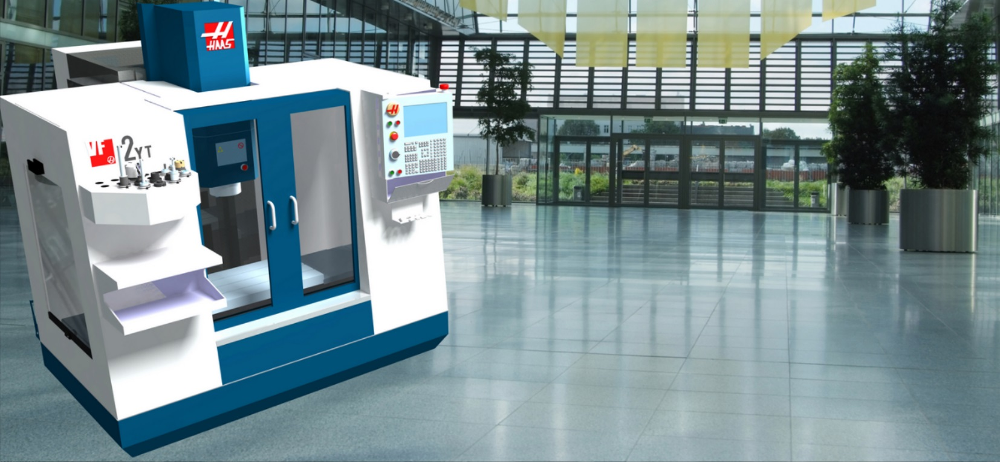

DESIGN
CAD model rotating • blueprints • digital wireframe
DESIGN
CAD model rotating • blueprints • digital wireframe
DEVELOPMENT
Prototype assembly • measurement • validation
MACHINING
Haas VF2 • CNC setup • precision finishSW-DM EVOLUTION
DESIGN • DEVELOPMENT • MACHINING